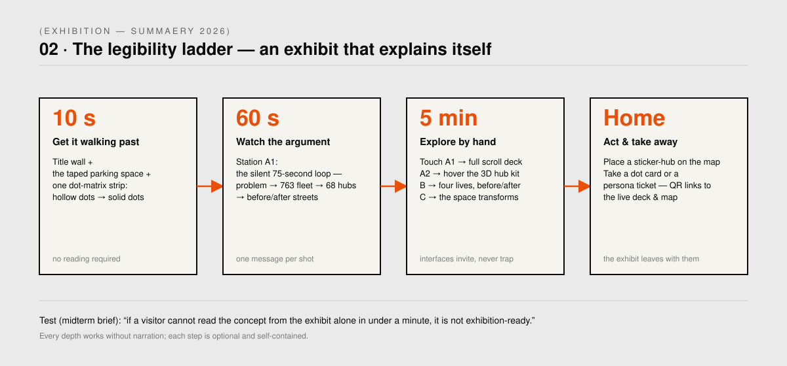
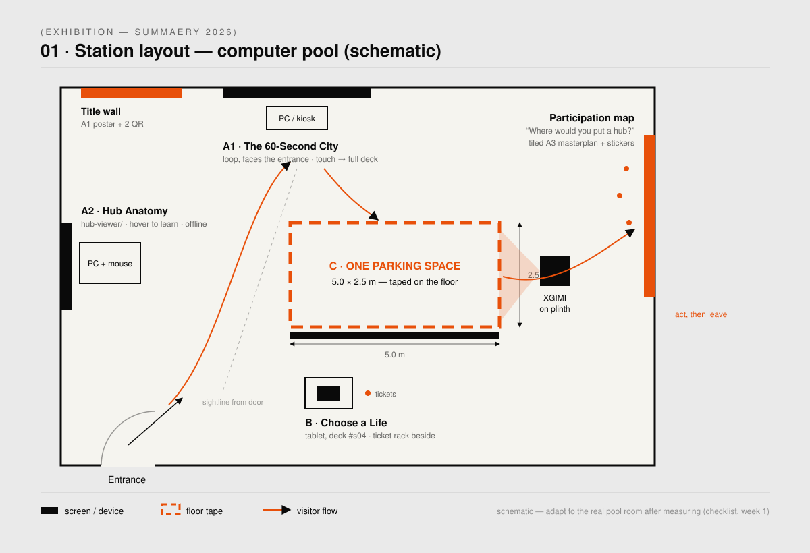
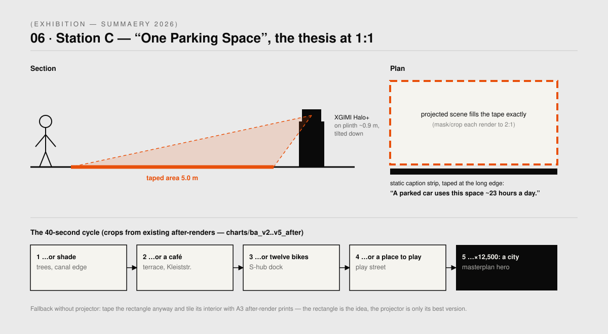
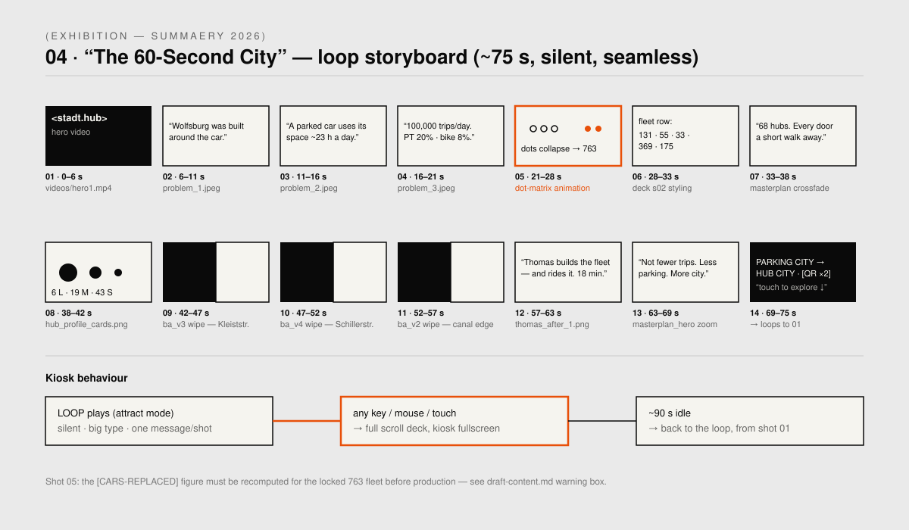
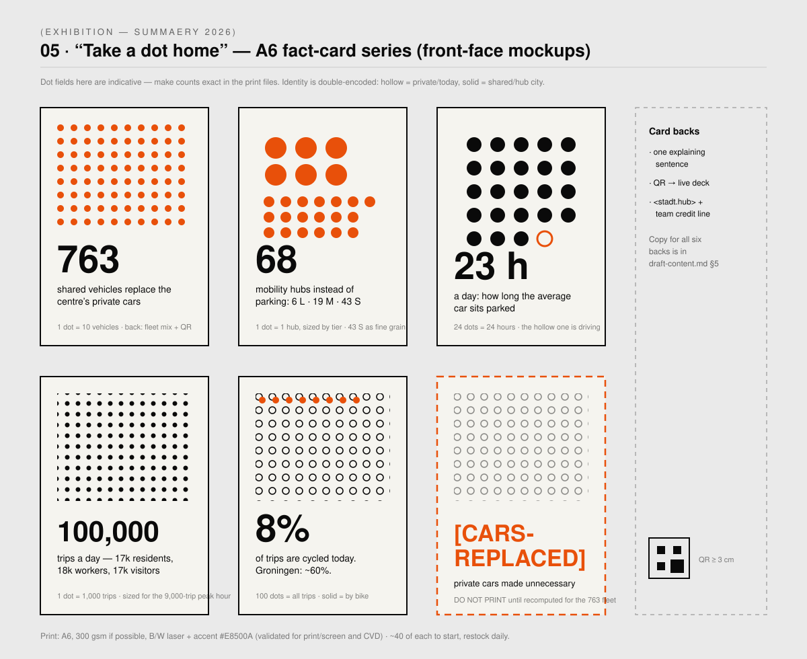
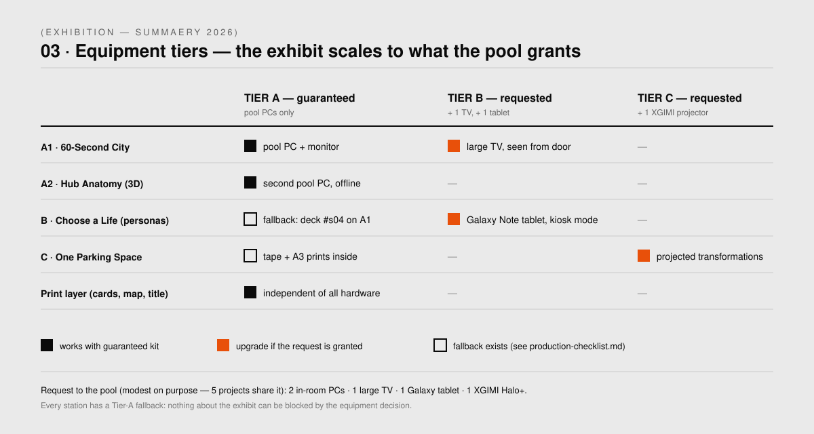

Parking City → Hub City — how the project presents itself when nobody is there to present it.
TEAM DOCUMENT — not part of the public presentation · sources: concept.md · draft-content.md · production-checklist.md
The exhibit behaves like the thesis: it takes a real parking space back from the parking city.
A 5.0 × 2.5 m parking space is taped onto the computer-pool floor and spends four days becoming everything a parking space could be instead — projected trees, a café, twelve bikes, a place to play. Every screen, card and sticker arranges itself around that rectangle. A visitor who reads nothing still walks through the argument.
The unifying graphic grammar is the dot-matrix — the device the critic singled out at finals, with instructions to develop more of it and to prioritise exhibition legibility. ○○○○○○○ hollow = private/today · ●●● solid = shared/hub city. One accent colour: #E8500A.
The midterm brief's test: “if a visitor cannot read the concept from the exhibit alone in under a minute, it is not exhibition-ready.” The exhibit works at four depths of attention, each self-contained.

A silent ~75 s attract loop built from existing assets — problem → dot-matrix collapse → 68 hubs → before/after streets. Touch anything → the full scroll deck; 90 s idle → back to the loop.
The existing hub-viewer/ 3D kit, exactly as built: hover any element for its one-line story.
Offline, self-explanatory, zero build cost.
Sabine 38 · Lukas 13 · Thomas 44 (the VW case study, first in reading order) · Gertrude 85 — the deck's persona section full-screen at the edge of the taped space, with a ticket rack beside it.
The taped 5.0 × 2.5 m rectangle. The projector cycles what this exact footprint becomes in Hub City. Caption: “A parked car uses this space ~23 hours a day.” Fallback: A3 after-render prints inside the tape.
Six A6 dot-matrix fact cards + four transit-ticket persona cards, QR-linked to the live deck and map. The exhibit leaves the building in visitors' pockets.
The masterplan tiled from A3 sheets + accent dot stickers. Visitors place their own hub; by Sunday the map is a crowd-made dot-matrix — photographed daily for the August competition boards.


75 seconds, silent, one message per shot — the exhibition's voice when no one is speaking.



| By | Do |
|---|---|
| Fri Jul 3 | Team meeting: adopt the concept · submit the equipment request · resolve [CARS-REPLACED] · measure the room |
| Wed Jul 8 | Loop built · prints done · tape the space · full unattended dry run |
| Jul 9–12 | Daily: restock cards, charge tablet, photograph the sticker map each evening |
Full schedule and fallback matrix: production-checklist.md.